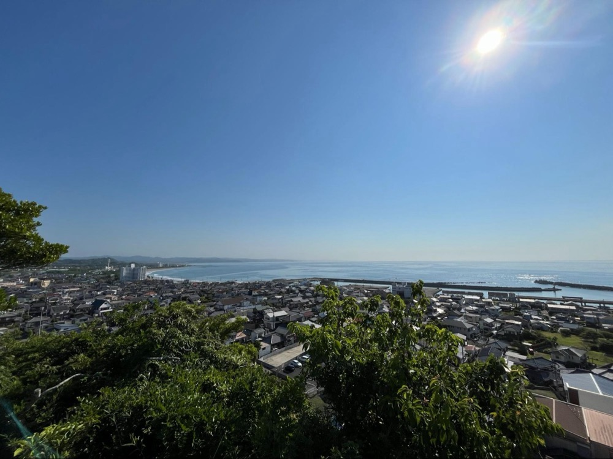
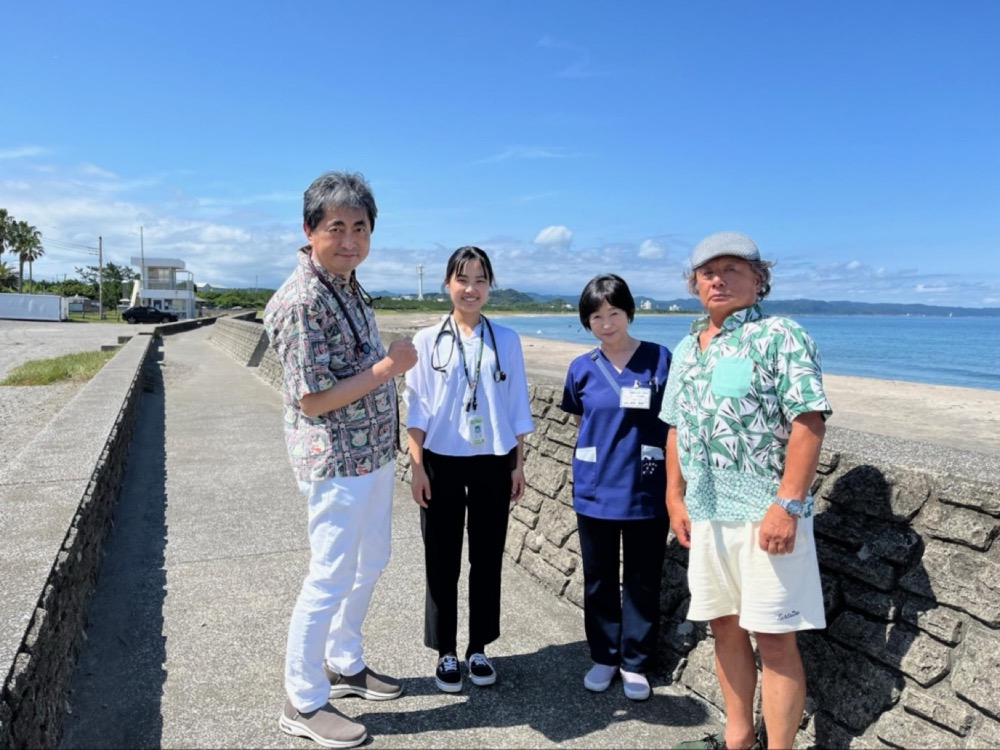
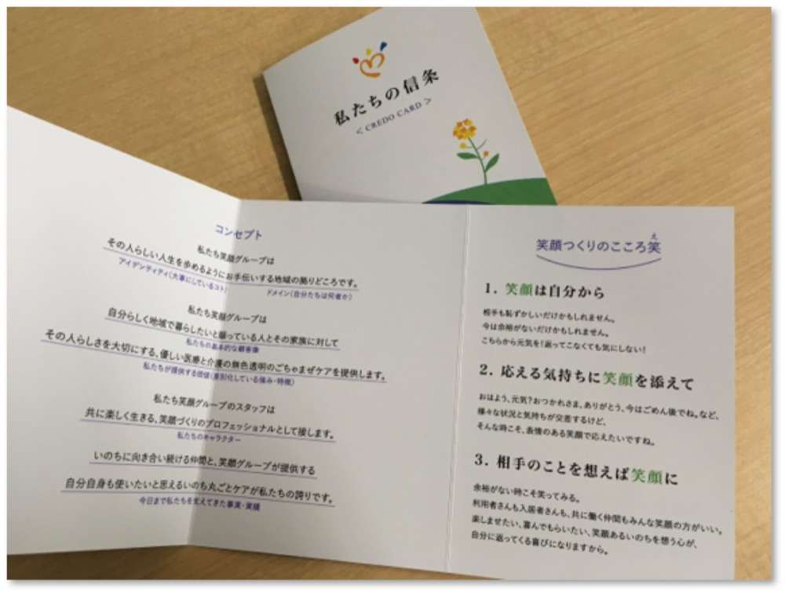
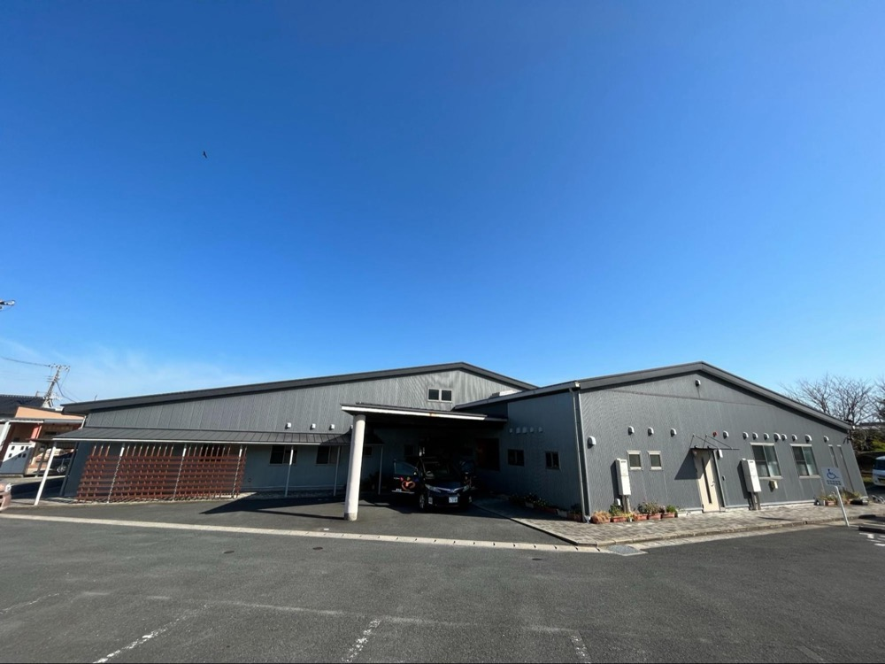

南房総で“いい人生”を形つくれるところ
松永 平太
笑顔グループ 理事長
1992年に東京医科歯科大学（現：東京科学大学）卒業。みさと健和病院、柳原病院等で働いたのち、1997年に父の診療所を継承。2000年に介護保険制度施行にあわせ有限会社ハイピースにて訪問看護・介護ステーションそよかぜを創設。2001年に医療法人社団優和会創設。2002年デイサービスセンターあそぼを創設後、2005年社会福祉法人おかげさまを創設。その後、老人保健施設夢くらぶ、夢ほーむ、認知症対応型デイサービスおかげさまを創設し、2009年に松永醫院をリニューアルオープンする。2023年には看護小規模多機能居宅介護にこにこを創設、2024年に地域包括支援センターえがおを創設する。
企業サイトを見るTRACK 01
南房総で“いい人生”を形つくれるところ

潮騒が子守唄のように響く千倉のまち。そこで笑顔グループを率いる松永平太理事長は、「人が笑い、食べ、愛され続ける時間を最後の瞬間まで延ばすこと」を使命に掲げる。白い病室に押し込められがちな最期を、ありのままの暮らしの延長に引き戻す。その挑戦が、地域にひとつの“生のモデル”を芽生えさせた。
医療法人社団優和会、社会福祉法人おかげさま、有限会社ハイピース。およそ200名の仲間が「その人らしく地域で生きる」を支えている。たとえ認知症があっても、独居であっても、本人が望む生き方を支える自己決定の尊重をよりどころとしている。
松永は、内科を軸に全身を診る総合医でありながら、命の灯火（ともしび）を最後まで見守る介護福祉の専門家としても活躍している、稀有な存在だ。
TRACK 02
命を支える仕組みごとデザインする

父親が医師、母親が看護師という医療者夫婦の次男として生まれた松永。α、β、γのベータからとって平太と名付けられた。1992年に東京医科歯科大学（現：東京科学大学）を卒業後、下町の病院にて勤務し、現場で地域医療を学んだ。1997年、同じ医師として地域の医療に貢献していた父が急逝したとき、当初は閉院するつもりだったという。しかし、父が診ていた患者、そして父を長年支えてきたスタッフの姿を目の当たりにしたとき、そんな気持ちが吹っ飛んでしまった、と松永は語る。
継承した診療所を、地域包括ケアの砦へと改装した。2000年に訪問看護・介護ステーションそよかぜ、翌年に医療法人社団優和会を設立し、その後デイサービスあそぼ、老人保健施設夢くらぶ、夢ほーむなど、次々と介護施設を展開する。
彼が拡げる輪は医療に留まらない。「命を支える仕組みごとデザインする」その思いが、医療・介護・福祉の垣根を溶かし、住民同士が寄り添い支えあう風土を目指す。


TRACK 03
生き切る設計図
大切な人生の最期、どこで過ごしたいですか？ 心臓が止まったらどうします？心臓マッサージを希望しますか？ 食べられなくなったらどうします？経管栄養を希望しますか？
「死」そのものを避けずに語ることで、むしろ“どう生きるか”が鮮明になる…松永はそう説く。問いの答えをもとに、在宅・施設・病院を編み合わせた柔らかなケアプランを描き、一人ひとりの“生き切る設計図”を形にしていく。
松永は、人生を全うし納得のいく最期を迎える医療こそが真の姿だと喝破する。「よく、ぽっくり死にたいと言うじゃないですか。たしかにこの世の中の全員がそんな感じで一生を終えられたらいいですが、だいたいは全員ぽっくり…とはいかないものです。だからこそ私は一人ひとりに、先ほどの3つの質問をします。話し始めると、だんだんと、より生に対する輪郭がはっきりとする。必ず納得して、生き切ってほしいんです」